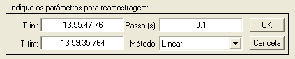
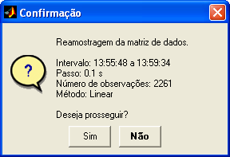
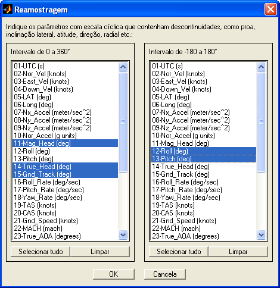
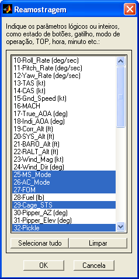
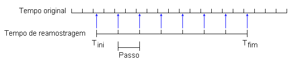

| Menu
Funções |
|
Reamostrar
Essa função
permite reamostrar a
matriz de dados segundo um novo tempo de referência, através de
interpolação no
tempo.
Indique como
abscissa um parâmetro de tempo adequado para
ser usado como referência na interpolação (monotônico
crescente e sem pontos inválidos).
Clique no menu “Funções ►
Filtragem e reamostragem ... ► Reamostrar”.
A Caixa de
Diálogo solicitará que o usuário indique os parâmetros
para reamostragem:

● No campo “T ini”, indique
o tempo inicial do novo intervalo de reamostragem, em qualquer formato
de tempo reconhecido
pelo R_DAT. O valor default
é o
valor inicial do parâmetro de tempo em uso.
● No campo “T
fim”, indique o tempo final do novo
intervalo de reamostragem, em qualquer formato
de tempo reconhecido
pelo R_DAT. O valor default
é o
valor final do parâmetro de tempo em uso.
● No campo
“Passo”, indique o passo do novo intervalo
de reamostragem,
● No campo
“Método”, indique o método de interpolação
desejado. Os métodos disponíveis são:
-
Linear;
-
Vizinho;
- Spline; e
-
Cúbico.
| Nota: O intervalo
de tempo de reamostragem deve estar contido no intervalo do parâmetro
de tempo em uso. |
Ao pressionar
“OK”, o R_DAT analisará o parâmetro “x”. Caso o
mesmo não seja adequado, a operação não poderá ser realizada.
Caso o
parâmetro x e os dados de entrada sejam adequados, o
R_DAT informará os parâmetros da operação e solicitará confirmação do
usuário:

Parâmetros com escala cíclica, como ângulos de Euler, podem ser incorretamente interpolados entre observações que apresentam descontinuidade (por exemplo, proa acima de 360° volta para o início da escala). Para evitar esse efeito, o usuário deve indicar quais parâmetros possuem essa característica (em graus):

Parâmetros lógicos (como estado de acionamento) ou inteiros (como TOP), podem ser incorretamente interpolados entre observações que apresentam saltos (por exemplo, de 0 a 1 surgiriam valores intermediários). Para evitar esse efeito, o usuário deve indicar quais parâmetros possuem essa característica:

Ao prosseguir,
toda a matriz DADOS será interpolada e
atualizada.
| Nota: É recomendado
salvar as matrizes de trabalho antes de realizar a operação, pois as
alterações são profundas e não é possível desfazê-las. |
Lógica da
Operação
A partir dos
valores de tempo inicial, tempo final e passo
inseridos pelo usuário, é criado um novo parâmetro de
tempo. A matriz DADOS é interpolada segundo esse novo parâmetro, de
acordo com
o método escolhido pelo usuário.

| |
Alterar
cadência |
Alterar
intervalo circular |
|